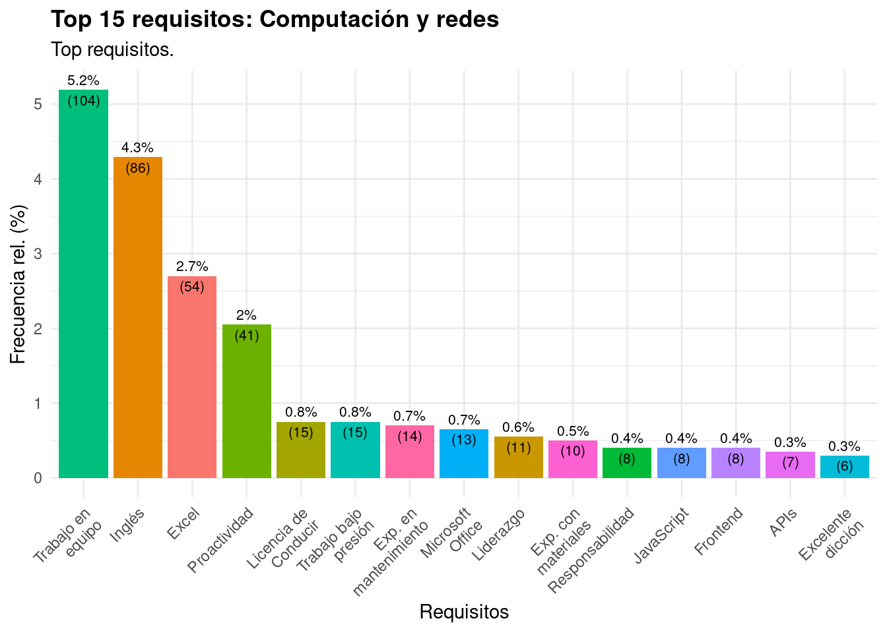
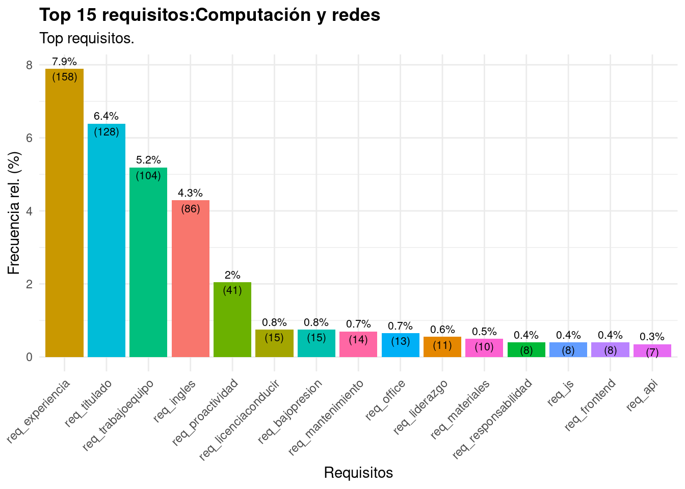
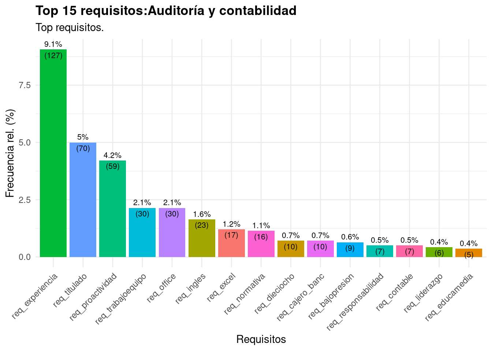
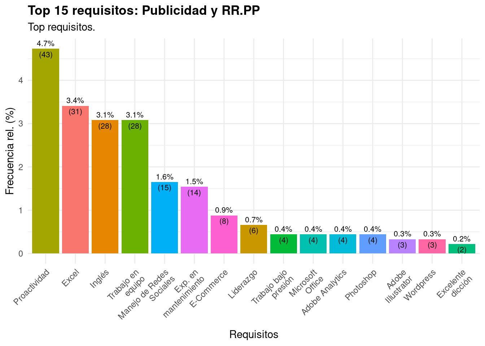
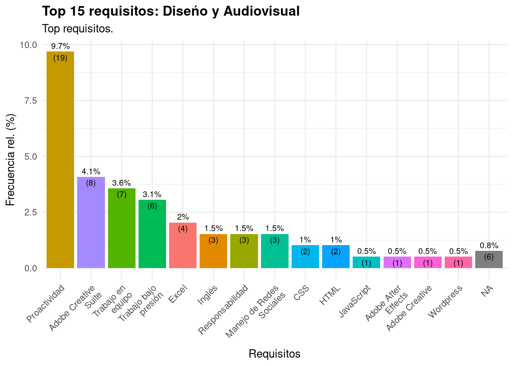
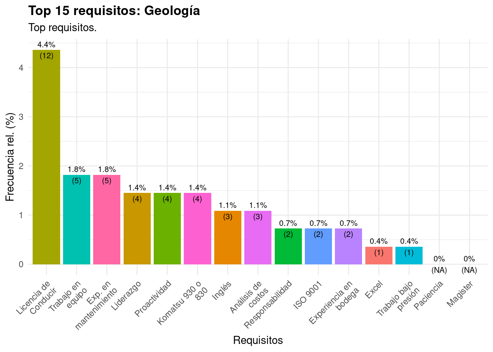
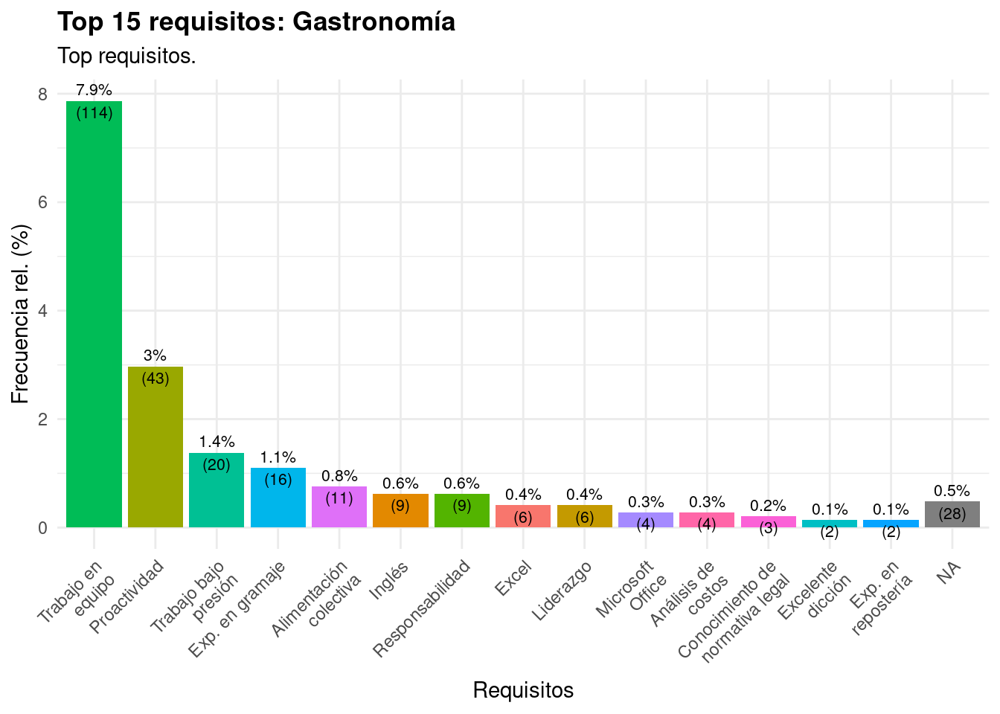
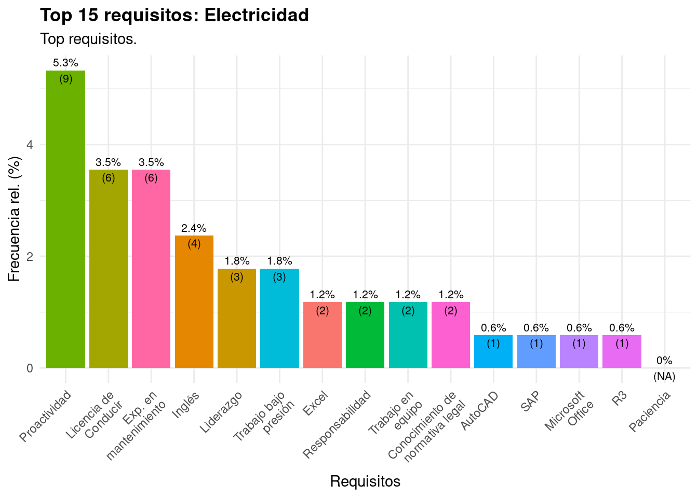

3 Análisis requisitos
3.1 Requisitos en logística

3.2 Requisitos en Administración y Finanzas

3.3 Requisitos en Computación y Redes

3.4 Requisitos en Prevención de riesgos

3.5 Requisitos en Comercio

3.6 Requisitos en Cultura

3.7 Requisitos en Auditoría y Contabilidad

3.8 Requisitos en Química y Farmacia

3.9 Requisitos en Enfermería

3.10 Requisitos en Publicidad y Relaciones Públicas
3.11 Requisitos en Construcción

3.12 Requisitos en Diseño y Audiovisual
3.13 Requisitos en Geología

3.14 Requisitos en Gastronomía

3.15 Requisitos en Hotelería y Turismo

3.16 Requisitos en Maquinaria y Automotriz

3.17 Requisitos en Electricidad

3.18 Requisitos en Agrícola

3.19 Requisitos en Alimentación

3.20 Requisitos en Tecnología Médica
3.21 Requisitos en Medioambiente

3.22 Requisitos en Veterinario

3.23 Requisitos en Otros
3.24 Requisitos en Odontología

3.25 Requisitos en Relaciones Públicas

3.26 Requisitos en Diseño y Audiovisual

3.27 Requisitos en Publicidad
3.28 Requisitos en Geografía y geomática
